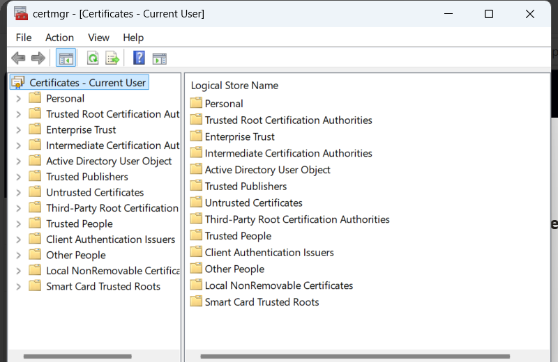

متى نعملها
نستخدمهما عندما نريد أن يقرأ الرسالة المستلم المقصود فقط.
تقنية 9 من 15
نستخدمهما عندما نريد أن يقرأ الرسالة المستلم المقصود فقط.
وظيفتهما التشفير غير المتماثل (Asymmetric Encryption). الزوج مرتبط رياضياً. المفتاح العام (Public Key) يُوزَّع ويُستخدم للتشفير. المفتاح الخاص (Private Key) يبقى سراً عند المستلم، وبه فقط يُفك التشفير.
نولّد الزوج من أداة الشهادات. ننشر المفتاح العام (Public Key) ونبقي المفتاح الخاص (Private Key) على الجهاز. المُرسِل يشفّر بالمفتاح العام (Public Key)، والمستلم يفك بالمفتاح الخاص (Private Key).
